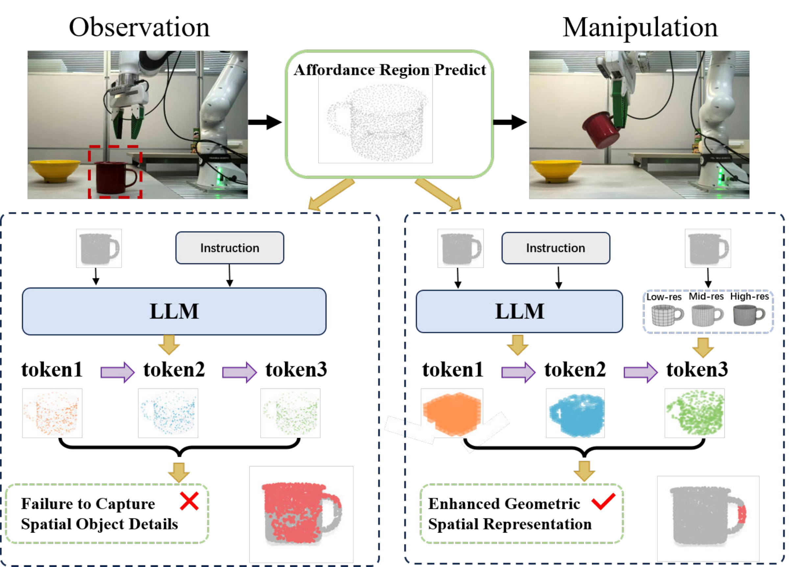
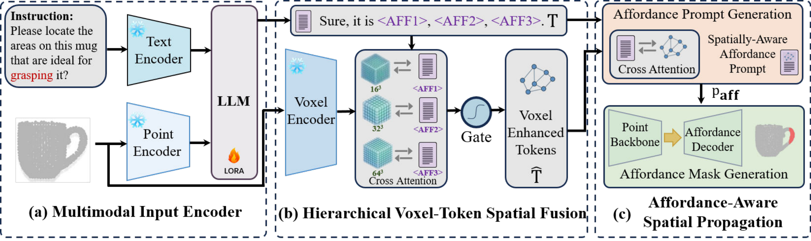
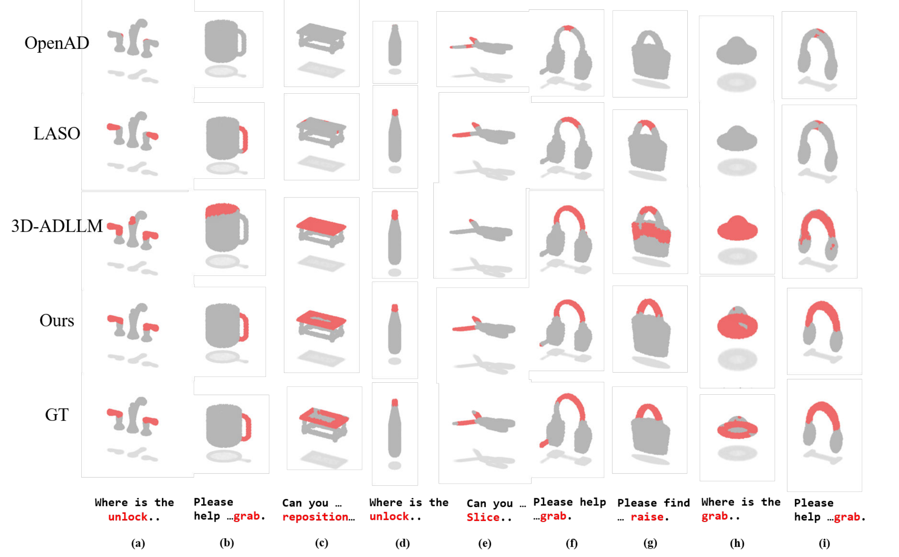
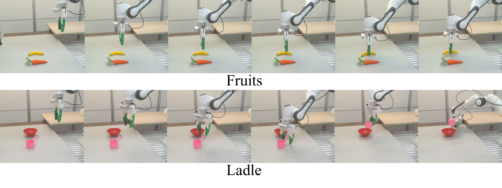

Conference on Robot Learning · 2026
VoxAfford: Multi-Scale Voxel-Token Fusion for Open-Vocabulary 3D Affordance Detection
Xi'an Jiaotong University
National Key Laboratory of Human-Machine Hybrid Augmented Intelligence
Institute of Artificial Intelligence and Robotics

Abstract
Open-vocabulary 3D affordance detection localizes the regions of an object that support a language-described interaction. Language-model output tokens provide affordance semantics, while accurate masks also depend on spatial structure.
VoxAfford retrieves complementary geometric features from a frozen 3D VQVAE at three resolutions. Cross-attention and a learned scalar compatibility gate enhance each generated affordance token. Query-conditioned aggregation forms a spatially aware prompt, which works alongside point features to predict the final mask.
Method
The point cloud and language query enter a LoRA-adapted LLM, which generates three affordance tokens. Each token retrieves geometry from its paired VQVAE scale (163, 323, or 643). A scalar compatibility gate controls the geometric injection. A semantic query then aggregates the enhanced tokens into a prompt for mask prediction.

Results
OpenAD open-set evaluation with full-object point clouds and partial observations. All values below are instance-level metrics in percent; higher is better.
| Method | mIoU ↑ | mAcc ↑ | mAP50 ↑ |
|---|---|---|---|
| 3D-ADLLM | 30.28 | 70.66 | 27.80 |
| 3D-ADLLM† | 32.60 | 73.21 | 35.13 |
| VoxAfford | 40.57 | 77.68 | 40.67 |
† Matched pretraining: PartNet segmentation pretraining and ShapeLLM-Omni VQVAE features at the LLM input. Values are from Table 1 of the paper.
Qualitative comparisons

Real robot experiments
VoxAfford succeeds in 33 of 50 trials (66%) across five novel objects. A Franka Research 3 arm and three Orbbec Femto Bolt RGB-D cameras provide the manipulation platform and scene point clouds.

Camera viewpoints and extrinsics remain fixed. Object pose, robot initial state, and clutter vary across trials. Both methods use paired scenes and the same execution pipeline.
| Object | 3D-ADLLM | VoxAfford |
|---|---|---|
| Cup with handle | 5 / 10 | 8 / 10 |
| Cup without handle | 0 / 10 | 5 / 10 |
| Fruits | 6 / 10 | 6 / 10 |
| Ladle | 5 / 10 | 5 / 10 |
| Pan | 2 / 10 | 9 / 10 |
| Overall | 18 / 50 | 33 / 50 |
Evaluation scope and limitations
VoxAfford relies on a frozen pre-trained VQVAE and fixed token–scale retrieval pairing. Evaluation focuses on isolated objects and one robot platform. Noisy or partial observations, segmentation, calibration, and reconstruction errors can affect localization and execution. See the paper for the full protocol and failure analysis.
Citation
@inproceedings{sun2026voxafford,
title = {{VoxAfford}: Multi-Scale Voxel-Token Fusion
for Open-Vocabulary {3D} Affordance Detection},
author = {Sun, Haowen and Zhang, Shaolong and Li, Mingyang
and Ma, Chengzhong and Chen, Xinzhe and Cui, Qiongjie
and Chen, Xingyu and Liu, Zeyang and Lan, Xuguang},
booktitle = {Conference on Robot Learning},
year = {2026}
}